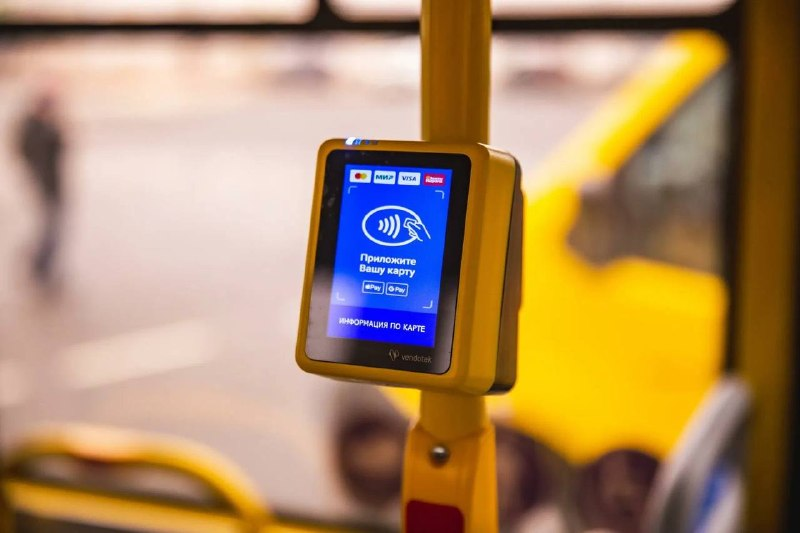

01
Общество и городская среда · событие дня
Терминалы перевозчикам обещают предоставить бесплатно, оператора выберут по конкурсу
Наличные сохранятся. При оплате водитель или кондуктор приложит транспортную карту к терминалу — так операция попадет в общую систему. Частные перевозчики уже опасаются дополнительных расходов на эквайринг и возможного снижения доходов. Поддерживаете?…